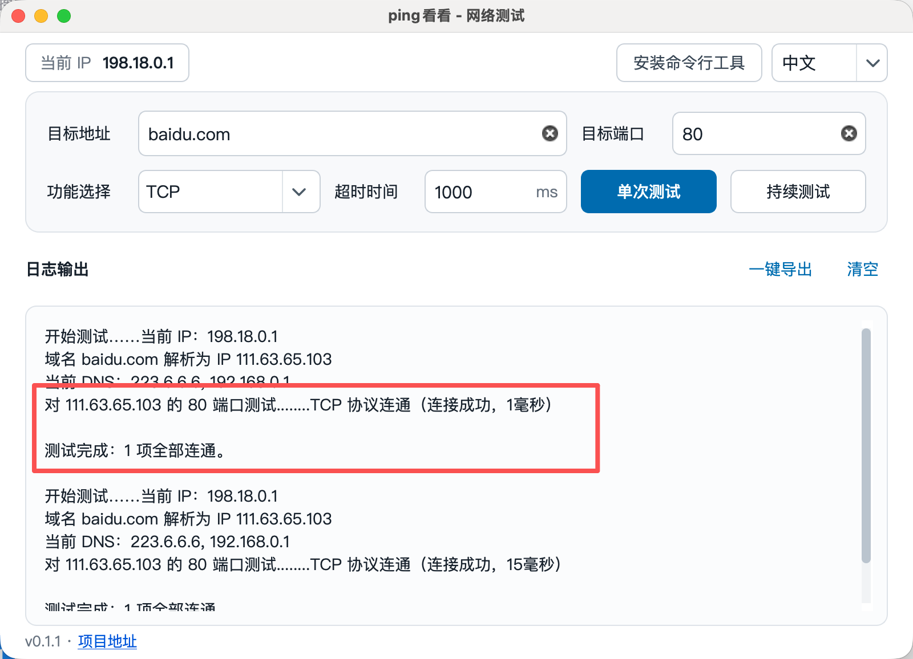
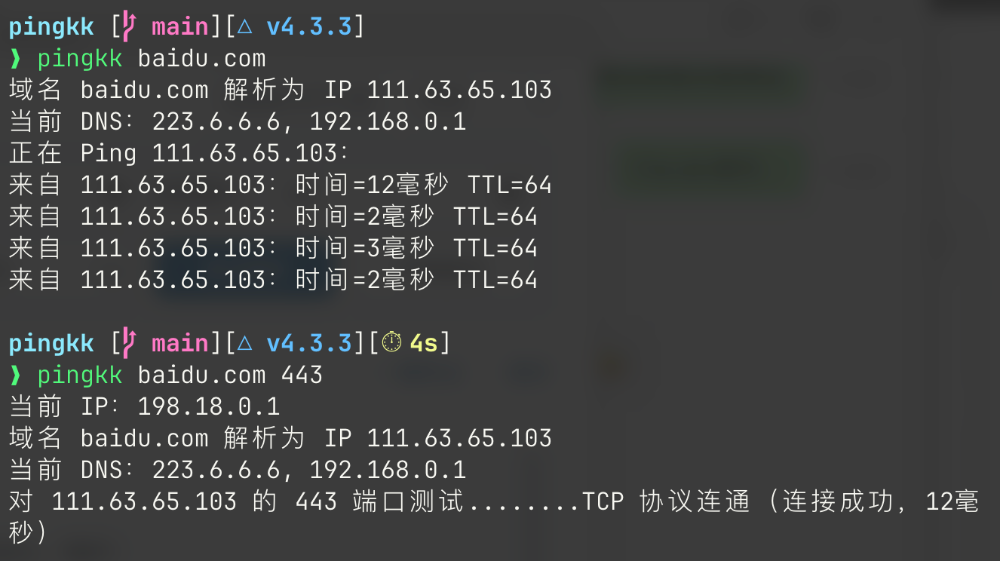
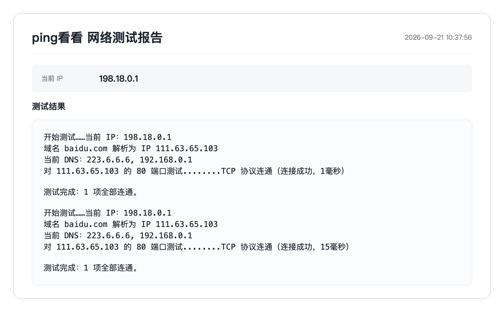

地址与端口测试
Ping、TCP 和 UDP 端口测试，支持多个端口、持续测试和自定义超时。
网络诊断 · 中文界面 · 多平台
测端口、查 DNS、追踪路由。
把排查过程变简单，把测试结果带走。
Windows / macOS / Linux

Ping、TCP 和 UDP 端口测试，支持多个端口、持续测试和自定义超时。
追踪连接路径，对比系统 DNS、当前 DNS、阿里 DNS 和腾讯 DNS 的解析结果。
检查本机出口、默认网关、DNS、代理和 HTTPS 直连，集中查看网络状态。
将图形界面的测试结果保存为报告图片，发给同事或运维人员继续排查。
图形界面包已内置命令行，也可单独下载 CLI 包。

不用逐条复制日志，一键保存测试报告图片。

| 操作 | 命令 |
|---|---|
| 测试 TCP 端口 | pingkk example.com 443 tcp |
| 测试 UDP 端口 | pingkk example.com 53 udp |
| 同时测试 TCP 和 UDP | pingkk example.com 53 all |
| 测试多个端口 | pingkk example.com 80,443 tcp |
| 持续测试 | pingkk -t example.com 443 tcp |
| Ping | pingkk example.com |
| 路由追踪 | pingkk example.com -r |
| 一键网络检查 | pingkk --checkup |
| DNS 对比诊断 | pingkk --dns example.com |
| 详细端口测试信息 | pingkk --advanced example.com 443 tcp |
| 详细 DNS 诊断信息 | pingkk -a --dns example.com |
| 自定义超时（毫秒） | pingkk --timeout 1000 example.com 443 tcp |
端口类型可选 tcp、udp 或 all。-t、-r / --route、-a / --advanced 和 --timeout / -w 可放在命令中的任意位置。
高级输出默认关闭，使用 -a 或 --advanced 可查看单包大小、丢包率、时延范围、波动及汇总统计。
便携单文件 portable.exe，双击即可使用；另有 setup.exe 安装包和 cli.zip 命令行包。
应用包 gui.zip，解压后打开 pingkk.app；另有 cli.zip 命令行包。首次打开请参考下方说明。
便携包 portable.tar.xz，解压后运行 run-pingkk.sh；另有 DEB 安装包和 cli.tar.gz 命令行包。
此版本未使用 Apple Developer ID 和公证。确认从本项目 Releases 下载后，在终端进入 pingkk.app 所在目录，执行以下命令，再双击打开应用。命令只清除此应用的下载隔离标记。
xattr -dr com.apple.quarantine pingkk.app不一定。UDP 只有收到目标响应时才显示为连通；没有响应时显示“状态未知”，不能仅据此确定端口不通。